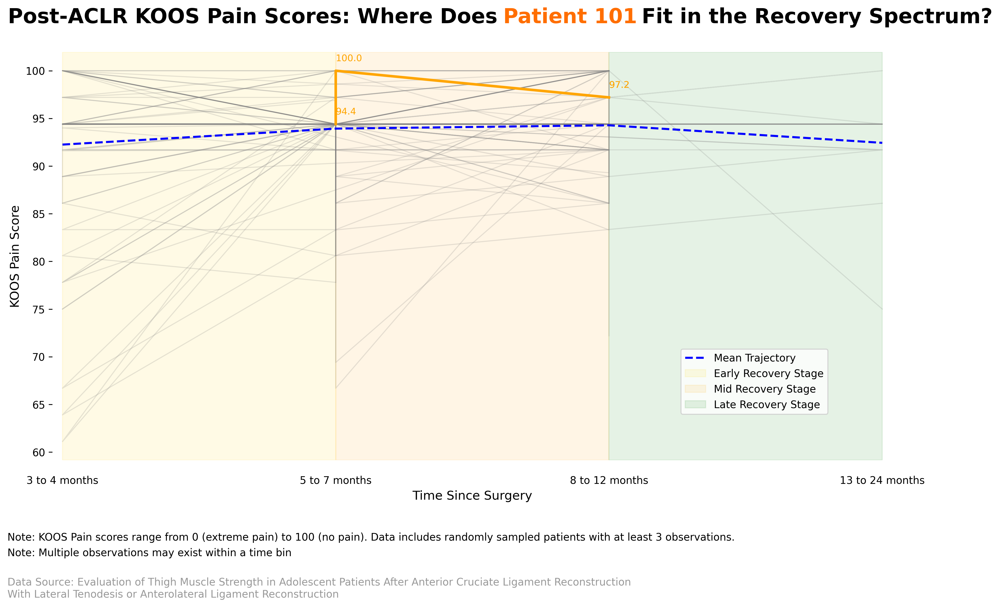
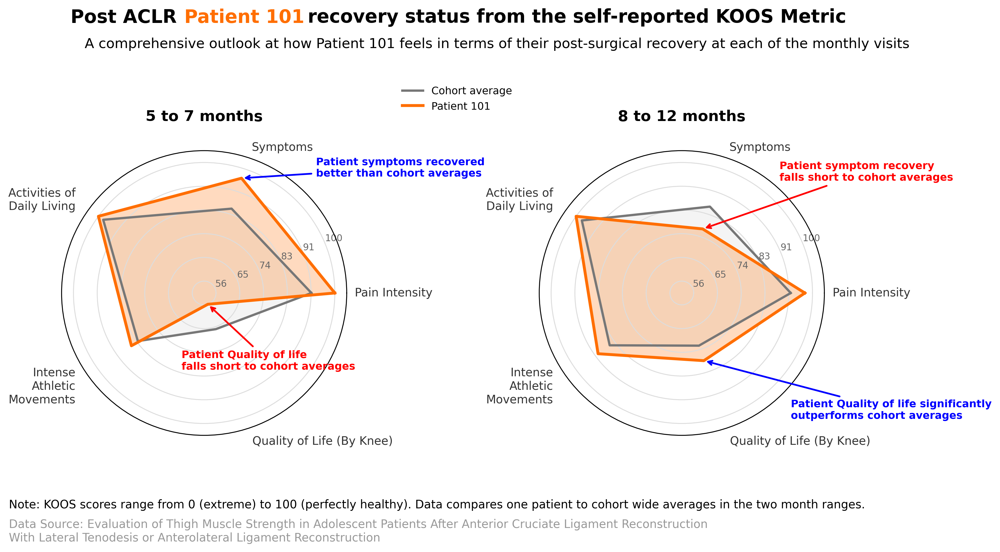
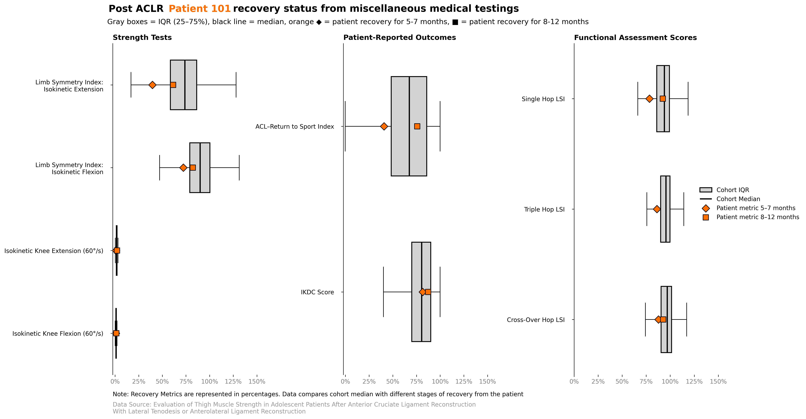

DS2023 Final_Project
1 Report
1.1 Prepared for
This report is prepared for physical therapists, sports medicine professionals, and surgical recovery specialists who support young athletes undergoing ACLR (Anterior Cruciate Ligament Reconstruction) recovery.
1.2 Problem Statement
Many athletes, especially young ones, undergo ACLR surgery, which has a high possibility of having negative ripple effects on their athletic future and overall well-being. While there are many ways to analyze post-surgical recovery for improvements for future patients, it is important to consider the patient that is currently recovering.
Frequently patients might not necessarily understand the path that their recovery will take, therefore it is critical that physical therapists utilize methods to illustrate to patients where they stand in track for recovery.
Even pre-surgery it is important that patients understand it is normal for the first three months to feel worse than before surgery, but that generally their perception of quality of life will increase.
1.3 Analysis
Post-surgery recovery is crucial, no matter the procedure(s) that the patient undergoes. With the majority of patients being athletes, knee strength and ability holds even more importance to a return to their pre-surgery pace of life.
ACLR surgery requires intensive physical therapy. It would be pretty unusual for someone with any sort of previous surgery to not have any pain related to the procedure ever again. Yet for many young patients this is the first surgery that they are ever undergoing and they are woefully underprepared in what the recovery will look like.
 This visualization helps clarify how KOOS Pain Scores typically change over time. Patient 101’s trajectory is highlighted to contextualize how their recovery compares to the cohort’s mean. It is shown that Patient 101’s current pain trajectory is well above the average pain trajectory, suggesting that the patient is experiencing a normal/regular level of pain that is common across all patients, and that patient 101 is on a healthy trajectory in terms of pain registration.
In the process of recovering, the patient might start feeling as though they are not actually recovering or like they are falling behind benchmarks.
 The radar chart illustrates Patient 101’s self-reported metrics (like pain, symptoms, ADL, QoL) against cohort averages at both 5–7 and 8–12 month check-ins. It turns out that Patient 101 reported a worsening in the symptom’s effect at the second visit, which is also visibly worse than the cohort’s average in terms of symptom effects at the time of 8 to 12 months. Nevertheless, the patient does experience an increase in Quality of Life at the second visit, siginficantly outperforming their cohort averages. While trade-off between symptom effects and quality of life is quite counterintuitive, we could also see that metrics such as intense athletic movements also slightly improved at the second visit, potentially indicating how patient 101 values the ability to perform intense athletic movements more than experiencing worse symptom effects.
Patients should be given comparisons with surgical peer groups in visualizations and explanations where they can easily see if they are staying on track in their recovery. This ‘on track’ benchmark would be determined by the average recovery statistics of peer groups in order to illustrate the full depth of recovery.
 This boxplot comparison provides a snapshot of how Patient 101 performs in objective medical tests and patient-reported outcomes, offering a tangible way to visualize if they’re on track. Observing all box plots, it is shown that at a second visit yielded a positive recovery outcome for almost all metrics. While some metrics didn’t reach the cohort’s median, it did reached within the inter-quartile range of the cohort’s recovery outcome, suggesting that patient 101 is on a healthy recovery trajectory, at least according to the two visits recorded. Moreover, Patient 101 is almost exceeding cohort median recovery metrics at all self reported outcomes, this correlates back to the radar graph, which showcased how Patient 101 excelled almost every KOOS self-reported recovery metrics against cohort averages. Hence overall suggesting that, although Patient 101 is on a modest healthy recovery trajectory, they are feeling much better than the rest of the cohort at Patient 101’s stage of recovery.
1.4 Conclusion
In the end, it is crucial post-surgery that the patient and their medical team have a straightforward way of tracking the patient’s progress.
Given the lasting nature of various quality of life and athletic ability related deteriorations, transparency on typical progression post-surgery is much needed.
The patient must have ways of seeing their recovery rate in a manner that illustrates if there is anything concerning about the pace of their recovery.
While explanations by physical therapists and surgeons are much needed, it is also crucial that the patient is able to see and comprehend their recovery themselves in order to ensure that the patient does not feel like they are flying blind in recovery.